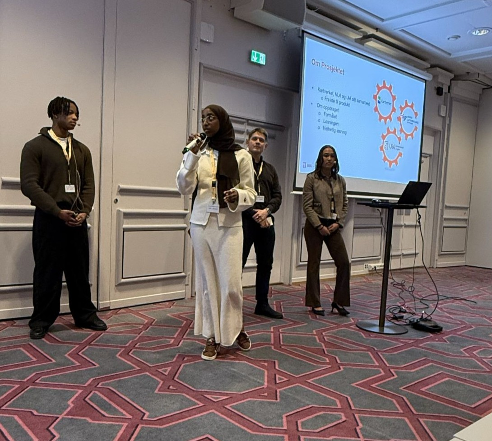

Introduksjonsvideo
En kort video om meg på 2 minutter.
Prosjekter fullført på skolen
Semesterprosjekt i samarbeid med Kartverket og Norges Luftambulanse.
Lagde webapplikasjon for piloter til å lagre informasjon og punkter på kartet som uregistrerte luftfartshindre for tryggere utrykninger.
Vår applikasjon fikk positiv tilbakemelding og endte opp på en liste over de beste prosjektene.
Video av prosjektet vårt:
Holdt foredrag i Geoforum sin X,Y,Z konferansen.

Sammen med tre andre studenter, holdte vi foredrag om prosessen og samarbeidet med Kartverket og Norges Luftambulanse. Til slutt presenterte vi hvert av våre prosjekter vi hadde i semesteret.